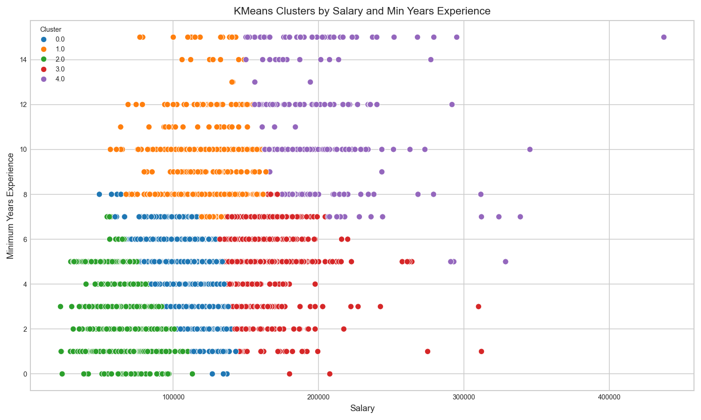
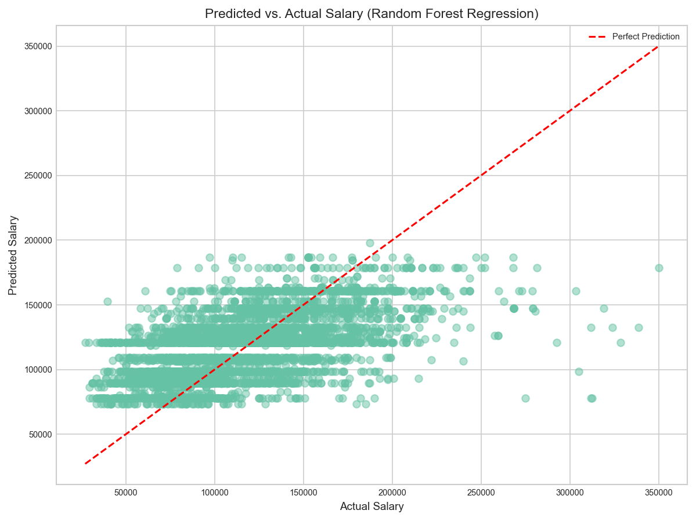
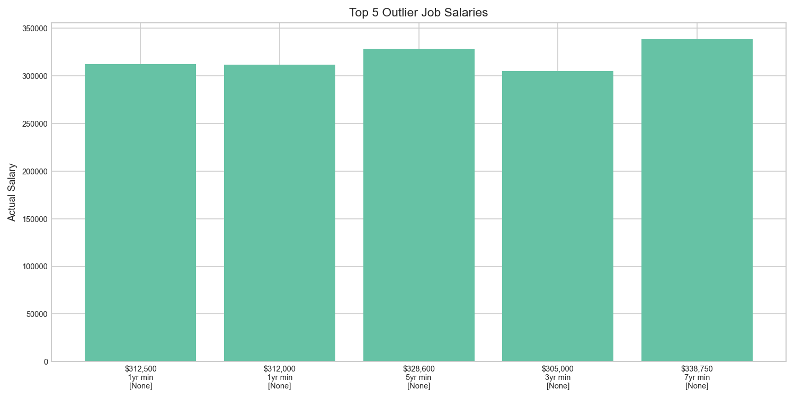

We performed KMeans clustering on job postings using core features (salary, minimum years of experience). This analysis seeks to segment jobs into groups with similar compensation and experience profiles, and to interpret these clusters using industry categories (NAICS).
1.1 Fit KMeans and Assign Clusters - Data Prep
We used KMeans clustering to segment jobs into five groups, using standardized salary and experience as inputs. Each posting is assigned to a cluster.

Figure 9: KMeans Clusters by Salary and Min Years Experience
Code
# _setup.qmdimport matplotlib.pyplot as pltimport seaborn as snsimport plotly.io as pioimport plotly.graph_objects as goimport plotly.express as px# Define a consistent themecustom_theme = go.layout.Template( layout=go.Layout( font=dict(family="Arial", size=12, color="#000000"), title=dict(font=dict(size=16, family="Arial")), paper_bgcolor="white", plot_bgcolor="white", colorway=px.colors.qualitative.Set2 ))pio.templates["custom_white"] = custom_themepio.templates.default ="custom_white"plt.style.use("seaborn-v0_8-whitegrid")plt.rcParams.update({"font.family": "Arial","font.size": 7,"axes.titlesize": 11,"axes.labelsize": 9,"figure.dpi": 120,"savefig.dpi": 150})sns.set_palette("Set2")
Code
import pandas as pd# Load pre-cleaned datasetdf = pd.read_csv("data/cleaned_job_postings.csv")
Code
from sklearn.preprocessing import StandardScaler# Select features for clusteringcluster_features = ['SALARY', 'MIN_YEARS_EXPERIENCE']X = df[cluster_features].dropna()# Standardize featuresscaler = StandardScaler()X_scaled = scaler.fit_transform(X)from sklearn.cluster import KMeans# Fit KMeans modeln_clusters =5# Assignment recommends 5, we must justify if we changekmeans = KMeans(n_clusters=n_clusters, random_state=42)clusters = kmeans.fit_predict(X_scaled)# Add cluster labels to DataFramedf.loc[X.index, 'KMEANS_CLUSTER'] = clusters# === Create a label column from the trained KMeans model ===try: df["kmeans_labels"] = pd.NA df.loc[X.index, "kmeans_labels"] = kmeans.labels_exceptAttributeError:if"kmeans_labels"notin df.columns: df["kmeans_labels"] = kmeans.fit_predict(X_scaled)print("KMeans labels column ready:", "kmeans_labels"in df.columns)print("Unique clusters:", df["kmeans_labels"].nunique())# === KMeans Cluster Reference Label Analysis ===cluster_col ="kmeans_labels"label_col ="NAICS_2022_6_NAME"# required 'reference label' for interpretationcrosstab = ( df.groupby([cluster_col, label_col]) .size() .reset_index(name="count") .sort_values([cluster_col, "count"], ascending=[True, False]))#display(crosstab.head(50))# Most common label per clustertop_per_cluster = crosstab.loc[crosstab.groupby(cluster_col)["count"].idxmax()].reset_index(drop=True)#print("\nMost common label per cluster:")#display(top_per_cluster)# Percent share per clusterct_share = ( crosstab .join(crosstab.groupby(cluster_col)["count"].transform("sum").rename("cluster_total")) .assign(share=lambda d: (d["count"] / d["cluster_total"]).round(3)) .sort_values([cluster_col, "share"], ascending=[True, False]))#display(ct_share.head(50))# KMeans Cluster Visualization with Top Job Titlesimport matplotlib.pyplot as pltimport seaborn as snsimport pandas as pd# --- SCATTERPLOT OF KMEANS CLUSTERS ---plot_sample = df.loc[X.index].sample(n=5000, random_state=42) iflen(X) >5000else df.loc[X.index]plt.figure(figsize=(10,6))sns.scatterplot( data=plot_sample, x='SALARY', y='MIN_YEARS_EXPERIENCE', hue='KMEANS_CLUSTER', palette='tab10')plt.title('KMeans Clusters by Salary and Min Years Experience')plt.xlabel('Salary')plt.ylabel('Minimum Years Experience')plt.legend(title='Cluster')plt.tight_layout()out_path ="figures/KMeans_Cluster.png"plt.savefig(out_path, dpi=150, bbox_inches="tight")#plt.show()plt.close()# --- TOP 5 JOB TITLES PER CLUSTER ---print("Top 5 Job Titles for Each Cluster:\n")for cluster insorted(df['KMEANS_CLUSTER'].dropna().unique()):print(f"\nCluster {int(cluster)}:")print(df[df['KMEANS_CLUSTER'] == cluster]['TITLE_CLEAN'].value_counts().head(5))
KMeans labels column ready: True
Unique clusters: 5
Top 5 Job Titles for Each Cluster:
Cluster 0:
TITLE_CLEAN
data analyst 393
senior data analyst 94
business intelligence analyst 88
sr data analyst 37
data analyst iii 26
Name: count, dtype: int64
Cluster 1:
TITLE_CLEAN
data analyst 81
enterprise architect 54
senior data analyst 23
solution architect 18
data modeler 17
Name: count, dtype: int64
Cluster 2:
TITLE_CLEAN
data analyst 681
business intelligence analyst 106
data analyst ii 42
senior data analyst 35
research data analyst 26
Name: count, dtype: int64
Cluster 3:
TITLE_CLEAN
data analyst 68
enterprise architect 59
senior data analyst 44
data engineer analytics 30
oracle cloud supply chain management senior consultant 19
Name: count, dtype: int64
Cluster 4:
TITLE_CLEAN
enterprise architect 56
solution architect 18
oracle cloud supply chain management manager 14
principal enterprise architect 14
enterprise platform architect 12
Name: count, dtype: int64
1.2 K-Means Clustering Summary
Clustering on salary and minimum experience produced three clear market segments:
Entry-level / lower salary
Mid-career / moderate salary
Senior specialist / high salary
This segmentation aligns with career ladders and confirms the broad, positive relationship between experience and compensation.
Business relevance
Job seekers: Use cluster patterns to target industries/roles occupying higher-pay segments and to plan upskilling.
Employers: Map openings to cluster ranges to calibrate pay bands against the external market and reduce attrition risk.
Code
# Cross-tab clusters by industry to interpret groupingscrosstab = pd.crosstab( df.loc[X.index, 'KMEANS_CLUSTER'], df.loc[X.index, 'NAICS_2022_6_NAME'])
2 Regression – Predicting Salary
We chose Random Forest over Linear Regression because the relationship between experience and salary is non-linear, and the model captures complex interactions more effectively.
The goal of this model is to predict job posting salary using experience and employment type features. The model uses an 80/20 train–test split and evaluates performance using RMSE and R² metrics.
Code
# Feature Selection and Data Preparationfrom sklearn.model_selection import train_test_splitimport pandas as pd# Use minimum years of experience, employment type (or closest available), and employment type as featuresfeatures = ['MIN_YEARS_EXPERIENCE', 'REMOTE_TYPE_NAME']# One-hot encode employment typedf_encoded = pd.get_dummies(df, columns=['REMOTE_TYPE_NAME'], drop_first=True)X = df_encoded[[col for col in df_encoded.columns if col in features or col.startswith('REMOTE_TYPE_NAME_')]]y = df_encoded['SALARY']X = X.dropna()y = y.loc[X.index]# Train/test split (70/30)X_train, X_test, y_train, y_test = train_test_split(X, y, test_size=0.3, random_state=42)
Code
# Random Forest Regressionfrom sklearn.ensemble import RandomForestRegressorfrom sklearn.metrics import mean_squared_error, r2_scoreimport numpy as np# Drop rows where y (salary) is missingmask =~y_train.isna()X_train_filtered = X_train.loc[mask]y_train_filtered = y_train.loc[mask]mask_test =~y_test.isna()X_test_filtered = X_test.loc[mask_test]y_test_filtered = y_test.loc[mask_test]# Train a random forest regression model to predict salaryrf = RandomForestRegressor(n_estimators=100, random_state=42)rf.fit(X_train_filtered, y_train_filtered)# Predict salaries for the test sety_pred = rf.predict(X_test_filtered)# Calculate RMSE (Root Mean Squared Error) and R² (coefficient of determination)mse = mean_squared_error(y_test_filtered, y_pred)rmse = np.sqrt(mse)r2 = r2_score(y_test_filtered, y_pred)print(f'Root Mean Squared Error (RMSE): {rmse:.2f}')print(f'R² Score: {r2:.3f}')
Root Mean Squared Error (RMSE): 34744.38
R² Score: 0.336
2.1 Regression Results and Interpretation
We modeled salary using Minimum Years of Experience (MIN_YEARS_EXPERIENCE) and Remote Type (REMOTE_TYPE_NAME). We excluded MAX_YEARS_EXPERIENCE (>85% missing) to protect statistical integrity; this reduced sample size but improved reliability.
Model performance
RMSE: 34,744.38
R²: 0.336
What this means An R² of 0.336 indicates experience and remote status explain a meaningful, but incomplete share of salary variation. That’s consistent with cross-industry labor data, where compensation is also driven by occupation, industry, location, and scarce technical capabilities.
Business relevance
For job seekers: Experience contributes to higher earnings, but targeted specialization (e.g., analytics, cloud, data engineering) and industry selection are decisive for larger pay jumps.
For employers: Pricing talent solely by tenure can misalign offers in high-skill roles. Clear remote/on-site definitions in postings improve candidate signal and reduce noise in market benchmarking.
Code
# Visual: Predicted vs. Actual Salaryimport matplotlib.pyplot as pltimport pandas as pdy_actual = y_test_filtered if'y_test_filtered'inglobals() else y_testy_pred_series = pd.Series(y_pred, index=y_actual.index[:len(y_pred)])plt.figure(figsize=(8, 6))plt.scatter(y_actual, y_pred_series, alpha=0.5)plt.xlabel("Actual Salary")plt.ylabel("Predicted Salary")plt.title("Predicted vs. Actual Salary (Random Forest Regression)")lo, hi =float(y_actual.min()), float(y_actual.max())plt.plot([lo, hi], [lo, hi], 'r--', label="Perfect Prediction")plt.legend()plt.tight_layout()out_path ="figures/Predicted_vs_Actual_RF_Regression.png"plt.savefig(out_path, dpi=150, bbox_inches="tight")#plt.show()plt.close()

Figure 10: Predicted vs. Actual Salary (Random Forest Regression)
Code
# Feature importance: shows which variables most influence salary predictionimportances = rf.feature_importances_feature_names = X.columnsfeat_imp =sorted(zip(feature_names, importances), key=lambda x: x[1], reverse=True)print("Top 5 features influencing salary prediction:")for name, imp in feat_imp[:5]:print(f"{name}: {imp:.3f}")
Top 5 features influencing salary prediction:
MIN_YEARS_EXPERIENCE: 0.953
REMOTE_TYPE_NAME_Not Remote: 0.017
REMOTE_TYPE_NAME_[None]: 0.015
REMOTE_TYPE_NAME_Remote: 0.014
REMOTE_TYPE_NAME_Unknown: 0.000
Figure 11: Top 5 Feature Importances (Random Forest Regression)
Code
# Calculate absolute prediction error for each jobimport pandas as pdy_actual = y_test_filtered if'y_test_filtered'inglobals() else y_testy_pred_series = pd.Series(y_pred, index=y_actual.index[:len(y_pred)])errors = (y_actual - y_pred_series).abs()outlier_indices = errors.nlargest(5).index# Show the original job posting rows for these outlierscols = ['SALARY', 'MIN_YEARS_EXPERIENCE', 'MAX_YEARS_EXPERIENCE', 'EMPLOYMENT_TYPE_NAME', 'REMOTE_TYPE_NAME']cols = [c for c in cols if c in df.columns]print(df.loc[outlier_indices, cols])
# Visual: Highlight Outliers in Predicted vs. Actual Salaryimport pandas as pdimport matplotlib.pyplot as pltemp_col =next((c for c in ["EMPLOYMENT_TYPE_NAME","REMOTE_TYPE_NAME","STATE_NAME","MSA_NAME"] if c in df.columns), None)subset_cols = ["SALARY","MIN_YEARS_EXPERIENCE"] + ([emp_col] if emp_col else [])subset = df.loc[outlier_indices, subset_cols].copy()def _fmt_sal(x): returnf"${int(x):,}"if pd.notna(x) else"N/A"def _fmt_exp(x): returnf"{int(x)}yr min"if pd.notna(x) else"n/a"def _fmt_emp(x): returnstr(x) if pd.notna(x) else"n/a"if emp_col: labels = [f"{_fmt_sal(s)}\n{_fmt_exp(m)}\n{_fmt_emp(e)}"for s, m, e inzip(subset["SALARY"], subset["MIN_YEARS_EXPERIENCE"], subset[emp_col]) ]else: labels = [f"{_fmt_sal(s)}\n{_fmt_exp(m)}"for s, m inzip(subset["SALARY"], subset["MIN_YEARS_EXPERIENCE"]) ]plt.figure(figsize=(10, 5))plt.bar(labels, subset["SALARY"].fillna(0))plt.ylabel("Actual Salary")plt.title("Top 5 Outlier Job Salaries")plt.tight_layout()out_path ="figures/Top_5_Outlier_Job_Salaries.png"plt.savefig(out_path, dpi=150, bbox_inches="tight")#plt.show()plt.close()
2.2 Outlier Jobs and Market Signals
The largest residuals include postings above $300,000 with only 1–5 years minimum experience, often missing a remote/on-site label. These cases point to specialized, high-impact roles where compensation is decoupled from tenure (e.g., advanced analytics, cloud/platform, niche leadership).
A small number of postings show very high pay at low experience with unspecified remote type. These likely reflect specialized roles or incomplete records. In practice, validate or isolate these cases before setting salary bands or training production models.

Figure 12: Top 5 Outlier Job Salaries
Business relevance
Employers: Standardize and QA high-pay, low-tenure postings, unclear fields and atypical mixes should be reviewed before publication.
Job seekers: Outliers highlight skill paths where focused upskilling can command premium pay earlier in a career.
3 Classification – Predicting Remote vs On-Site Job
We trained a logistic regression to predict Remote vs On-Site using MIN_YEARS_EXPERIENCE plus an available categorical descriptor (e.g., employment type or state).
Figure 13: Confusion Matrix — Remote vs On-Site Classification
3.1 Classification Results and Interpretation
Performance:
Accuracy: 0.622
F1 Score: 0.327
What this means: The model distinguishes remote vs. on-site at a moderate level, consistent with the idea that remote status is policy/role-design driven, not primarily a function of required experience.
Business relevance:
Employers: Remote flexibility can be offered across experience levels without materially distorting supply. If remote status is strategic, emphasize role/industry signals rather than tenure in postings.
Job seekers: Remote options exist from entry to senior levels, broadening geographic reach and negotiation leverage.